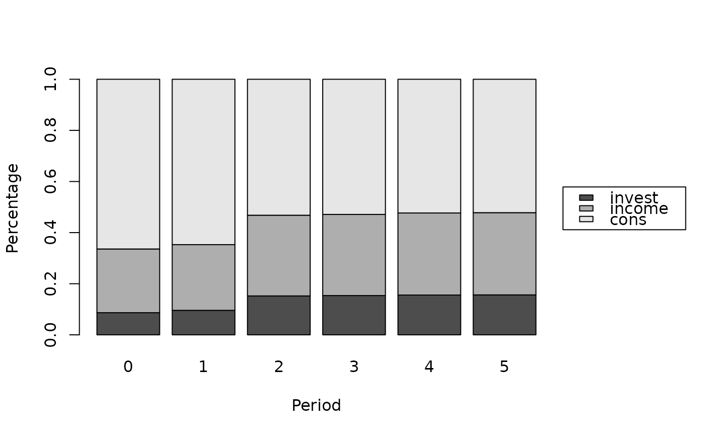

Produces the forecast error variance decomposition for an object of class 'bvarmodel'.
Usage
# S3 method for class 'bvarmodel'
fevd(
x,
response = NULL,
n_ahead = 5,
type = "oir",
normalise_gir = FALSE,
period = NULL,
max_groups = NULL,
impact = NULL,
...
)Arguments
- x
an object of class 'bvarmodel'.
- response
name of the response variable.
- n_ahead
number of steps ahead. Zero is allowed and returns the decomposition on impact alone.
- type
type of the impulse responses used to calculate forecast error variable decompositions. Possible choices are orthogonalised
"oir"(default), structural"sir", generalised"gir", structural generalised"sgir", sign restricted"sign"and"custom"impulse responses. For a structural model only"sir"and"sgir"are available; the other four require a non-structural model. See 'Details'.- normalise_gir
logical. Should the GIR-based FEVD be normalised?
- period
integer. Index of the period, for which the variance decomposition should be generated. Only used for TVP or SV models. Default is
NULL, so that the posterior draws of the last time period are used. Withtype = "sign"the default is the period the restrictions were imposed in, and another period is refused, since the rotations do not identify it.- max_groups
integer. Maximum number of variables the decomposition should contain. The
max_groups - 1variables with the largest contributions across the whole horizon are kept and the contributions of the remaining variables are added up in a further column named"Other". This keeps the legend of the corresponding plot readable for models with many variables. Default isNULL, so that a column is returned for every variable.- impact
the impact matrix of a
"custom"decomposition, either a single \(K \times K\) matrix that identifies every posterior draw the same way, or a list of such matrices with one entry per draw. Ignored for every other value oftype. See 'Details'.- ...
further arguments passed to or from other methods.
Value
A time-series object of class 'bvarfevd' running from period 0 to n_ahead,
with one column per variable holding the share of the forecast error variance of
response that is due to its shocks. For type = "oir" the rows sum to
one; for type = "gir" they do so only with normalise_gir = TRUE.
Details
The function produces forecast error variance decompositions (FEVD) for the VAR model $$A_0 y_t = \sum_{i = 1}^{p} A_{i} y_{t-i} + u_t,$$ with \(u_t \sim N(0, \Sigma)\). For non-structural models matrix \(A_0\) is set to the identiy matrix and can therefore be omitted, where not relevant.
For a structural model the posterior draws describe the structural form, so only "sir" and
"sgir", which invert \(A_0\), recover the reduced form the recursion for \(\Phi_i\)
needs. The other types are therefore not available for a structural model, and the two structural
types not for any other.
If the FEVD is based on the orthogonalised impulse resonse (OIR), the FEVD will be calculated as $$\omega^{OIR}_{jk, h} = \frac{\sum_{i = 0}^{h} (e_j^{\prime} \Phi_i P e_k )^2}{\sum_{i = 0}^{h} (e_j^{\prime} \Phi_i \Sigma \Phi_i^{\prime} e_j )},$$ where \(\Phi_i\) is the forecast error impulse response for the \(i\)th period, \(P\) is the lower triangular Choleski decomposition of the variance-covariance matrix \(\Sigma\), \(e_j\) is a selection vector for the response variable and \(e_k\) a selection vector for the impulse variable.
If type = "sign", the decomposition uses \(P Q\), with \(Q\) the rotation that
add_sign_restrictions accepted for that draw, and is otherwise the orthogonalised
case. A rotation of the Choleski factor still factorises \(\Sigma\), so the shares add up as
they do there. Draws that no admissible rotation was found for are left out.
If type = "custom", the decomposition uses the matrix \(P\) supplied in argument
impact in place of the Choleski factor, while the denominator stays the one of the
orthogonalised case: an impact matrix relabels the shocks but says nothing about the model,
so the forecast error variance being decomposed is still that of \(\Sigma\). The shares
therefore add up to one across shocks exactly when \(P P^{\prime} = \Sigma\), which holds
for a rotation of the Choleski factor and need not hold for an arbitrary matrix. This is not
enforced: a decomposition that does not sum to one is the honest report of an impact matrix
that does not factorise \(\Sigma\).
If type = "sir", the structural FEVD will be
calculated as $$\omega^{SIR}_{jk, h} = \frac{\sum_{i = 0}^{h} (e_j^{\prime} \Phi_i A_0^{-1} P e_k )^2}{\sum_{i = 0}^{h} (e_j^{\prime} \Phi_i A_0^{-1} \Sigma A_0^{-1\prime} \Phi_i^{\prime} e_j )},$$
where \(P\) is the lower triangular Choleski decomposition of \(\Sigma\). Since \(\Sigma\)
is the covariance matrix of the structural errors, the decomposition weighs each structural
shock by its own variance.
If type = "gir", the generalised FEVD of Pesaran and Shin (1998) will be
calculated as $$\omega^{GIR}_{jk, h} = \frac{\sigma^{-1}_{kk} \sum_{i = 0}^{h} (e_j^{\prime} \Phi_i \Sigma e_k )^2}{\sum_{i = 0}^{h} (e_j^{\prime} \Phi_i \Sigma \Phi_i^{\prime} e_j )},$$
where \(\sigma_{kk}\) is the variance of the error of the impulse variable \(k\), the
diagonal element of \(\Sigma\) that belongs to the shock. This is the decomposition that
spillover is built on.
If type = "sgir", the structural generalised FEVD will be
calculated as $$\omega^{SGIR}_{jk, h} = \frac{\sigma^{-1}_{kk} \sum_{i = 0}^{h} (e_j^{\prime} \Phi_i A_0^{-1} \Sigma e_k )^2}{\sum_{i = 0}^{h} (e_j^{\prime} \Phi_i A_0^{-1} \Sigma A_0^{-1\prime} \Phi_i^{\prime} e_j )},$$
where \(\Sigma\) is the covariance matrix of the structural errors and \(\sigma_{kk}\) the
variance of the structural shock \(k\).
Since GIR-based FEVDs do not add up to unity, they can be normalised by setting normalise_gir = TRUE,
which divides each row by its sum after the decomposition has been averaged over the posterior
draws. spillover normalises each draw before averaging, so its shares differ from
these by the difference between a ratio of means and a mean of ratios.
The row of period \(h\) sums the impulse responses of periods 0 to \(h\), so it is the decomposition of the \(h + 1\) step forecast error variance. Period 0 is the decomposition on impact.
References
Lütkepohl, H. (2006). New introduction to multiple time series analysis (2nd ed.). Berlin: Springer.
Pesaran, H. H., & Shin, Y. (1998). Generalized impulse response analysis in linear multivariate models. Economics Letters, 58, 17-29.
Examples
# Load data
data("e1")
e1 <- diff(log(e1)) * 100
e1 <- window(e1, end = c(1978, 4))
# Generate model data
model <- create_bvarmodel(e1, p = 2, deterministic = "const",
iterations = 100, burnin = 10)
# Chosen number of iterations and burnin should be much higher.
# Add prior specifications
model <- add_priors(model,
coef = list(v_i = 1, v_i_det = 1 / 10),
sigma = list(df = "k", scale = 1))
# Add initial values
model <- add_initial_values(model)
# Obtain posterior draws
object <- add_posterior_coefficients(model)
# Obtain FEVD
vd <- fevd(object, response = "cons")
# Plot FEVD
plot(vd)
